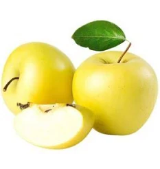

Що таке фрукти та їх користь?
Фрукти — це натуральні плоди рослин, які дарують нам вітаміни, мінерали і насолоду смаком. Вони покращують здоров’я, зміцнюють імунітет і є основою збалансованого харчування.
Ось основні переваги фруктів:
- Багаті на антиоксиданти, що борються з вільними радикалами.
- Допомагають травленню завдяки високому вмісту клітковини.
- Збагачують організм вітамінами С, А, групи В та іншими.
- Сприяють зниженню ризику хвороб серця і діабету.
ТОП-10 популярних фруктів
| Фрукт | Користь | Середня ціна (грн/кг) | Сезонність |
|---|---|---|---|
| Яблуко | Клітковина, вітамін C | 25 | Вересень – листопад |
| Банан | Калій, енергія | 40 | Цілий рік |
| Апельсин | Вітамін C, імунітет | 30 | Грудень – лютий |
| Манго | Вітаміни A, E | 70 | Травень – серпень |
| Ківі | Вітамін C, травлення | 50 | Листопад – січень |
| Гранат | Антиоксиданти, серце | 80 | Жовтень – грудень |
| Виноград | Поліфеноли, мозок | 35 | Серпень – жовтень |
| Полуниця | Вітамін C, шкіра | 90 | Червень – липень |
| Ананас | Бромелайн, травлення | 60 | Цілий рік |
| Персик | Вітаміни A, C | 55 | Липень – вересень |
Цікаві факти про фрукти
Натисни кнопку, щоб дізнатись цікавий факт!
Як обирати найсвіжіші фрукти?
- Оцініть колір: він має бути яскравим і природним.
- Перевірте шкірку: вона має бути без плям та вм’ятин.
- Понюхайте фрукт — свіжий фрукт має приємний аромат.
- Натисніть — фрукт має бути пружним, але не твердим.
Рецепт фруктового смузі
Інгредієнти:
- 1 банан
- 1 яблуко
- 1/2 склянки ківі (нарізаного)
- 1 склянка апельсинового соку
- Невелика жменя шпинату (за бажанням)
- Лід (за бажанням)
Змішайте все в блендері до однорідної консистенції. Смачного!
Галерея фруктів


.jfif)
.jfif)
.jfif)
Фруктове Квіз — перевір свої знання!
Міні-гра: Збери фрукти!
Натискай на фрукти, щоб набрати очки!
Рахунок: 0